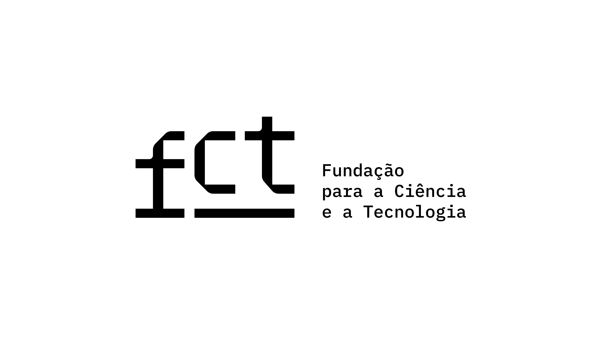

<footer>
  <div class="container-md beautiful-jekyll-footer">
    <div class="row">
      <div class="col-xl-8 offset-xl-2 col-lg-10 offset-lg-1">
      {% include social-networks-links.html %}
      {% if page.footer-extra %}
        <div class="footer-custom-content">
          {% for file in page.footer-extra %}
            {% include {{ file }} %}
          {% endfor %}
        </div>
      {% endif %}
      <p class="copyright text-muted">
      {% if site.author %}
        {{ site.author }}
        &nbsp;&bull;&nbsp;
      {% endif %}
      {{ site.time | date: '%Y' }}

      {% if site.url-pretty %}
        &nbsp;&bull;&nbsp;
        <span class="author-site">
          <a href="{% if site.url-canonical %}{{ site.url-canonical }}{% else %}{{ '/' | absolute_url }}{% endif %}">{{ site.url-pretty }}</a>
        </span>
      {% endif %}

      {% if site.matomo %}
        {% if site.matomo.opt-out %}
          &nbsp;&bull;&nbsp;
          <a href="http://{{- site.matomo.uri -}}/index.php?module=CoreAdminHome&action=optOut" target="_blank" class="text_muted">Do-not-Track</a>
        {% endif %}
      {% endif%}
      </p>
      {% unless site.remove-ads %}<p class="theme-by text-muted">
        Powered by
        <a href="https://beautifuljekyll.com">Beautiful Jekyll</a>
      </p>{% endunless %}
      <p>
      	<div style="display: flex; justify-content: center; align-items: center;">
		
		
	</div>
	<div style="display: flex; justify-content: center; align-items: center;">
		
		
	</div>
	<p>The organisers acknowledge the funding by Fundação para a Ciência e Tecnologia (Portuguese Foundation for Science and Technology) through CMAT projects UIDB/00013/2020 and UIDP/00013/2020.
	<p>This tutorial is financially supported by national funds through the FCT/MCTES (PIDDAC), under the project 2022.06672.PTDC - iMAD - Improving the Modelling of Anomalous Diffusion and Viscoelasticity: solutions to industrial problems, with  DOI 10.54499/2022.06672.PTDC (<a href="https://doi.org/10.54499/2022.06672.PTDC">https://doi.org/10.54499/2022.06672.PTDC</a>).</p>
      </div>
    </div>
  </div>
</footer>
